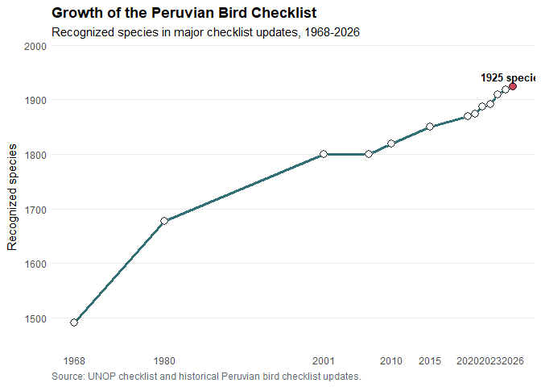

The avesperu package provides access to the most up-to-date and comprehensive dataset on Peru’s avian diversity. The current bundled checklist, aves_peru_2026_v1, corresponds to March 23, 2026 and includes 1,925 bird species, reflecting recent taxonomic changes and updated validations based on scientific publications, photographs, and sound recordings deposited in accredited institutions. The classification follows the guidelines set by the South American Checklist Committee (SACC).
The source checklist is maintained by the Unión de Ornitólogos del Perú (UNOP) and is available directly from the official Lista de las aves del Perú / List of the Birds of Peru page: https://sites.google.com/site/boletinunop/checklist
Species Categories
Each species in the dataset is classified into one of the following categories, reflecting its status in Peru:
- X Resident: 1,552 species
- E Endemic: 119 species
- NB Migratory (non-breeding): 140 species
- V Vagrant: 90 species
- IN Introduced: 3 species
- EX Extirpated: 0 species
- U Unconfirmed records: 21 species
This results in a total of 1,925 species, showcasing Peru’s extraordinary bird diversity and the ongoing refinement of its avifaunal checklist.
Checking for Checklist Updates
The package includes unop_check_update(), which compares the local dataset version date against the latest date published on the UNOP checklist website. This check is no longer triggered automatically on package attach; run it explicitly when you want to verify whether avesperu is up to date.
Features
The avesperu package is designed to streamline access to this data for researchers, conservationists, and bird enthusiasts alike. It provides:
A comprehensive and updated bird species dataset following the latest SACC classification.
Taxonomy validation tools, ensuring consistency with international standards.
Fuzzy matching capabilities for improved species name retrieval and validation.
An interactive Shiny interface for batch name validation, parsing, review, and export.

Insights and Trends
The chart shows the steady increase in the number of bird species recorded in Peru from 1968 to 2026, reflecting continuous research and improvements in taxonomic resolution:
A substantial jump occurred between 1968 and 1980, with 187 new species recorded.
In recent years, updates have slowed but continued to increase steadily, reflecting meticulous reviews of published records and taxonomic refinements.
Suggested citation:
Santos Andrade, P. E. (2026). avesperu: Access to the List of Birds Species of Peru.
R package version 0.1.1. https://paulesantos.github.io/avesperu/
The bird species checklist included in this package is based on:
Plenge, M. A., & Angulo, F. (2026). Lista de las aves del Perú / List of the birds
of Peru. Version 23-03-2026. Unión de Ornitólogos del Perú.
https://sites.google.com/site/boletinunop/checklistInstallation
You can install the avesperu package from CRAN using:
install.packages("avesperu")
# or
pak::pak("avesperu")Also you can install the development version of avesperu like so:
pak::pak("PaulESantos/avesperu")Usage
Current dataset
The current checklist shipped with the package is aves_peru_2026_v1.
data("aves_peru_2026_v1")Shiny app
The package includes an interactive Shiny application for batch scientific-name validation against the local avesperu checklist. The app supports pasted names, file upload (TXT, CSV, TSV, XLS, XLSX), exact or fuzzy matching, review tables, and export to CSV, TSV, XLSX, and run metadata.
You can explore the live deployed app here: https://paulefrensa.shinyapps.io/avesperu/
avesperu::run_avesperu_app()Basic Search
The search_avesperu() function accepts a character vector of species names and returns their status information from the Peru bird database. The function is fully vectorized, allowing efficient batch processing of multiple species simultaneously.
library(avesperu)
# Define species list
splist <- c("Falco sparverius",
"Tinamus osgoodi",
"Phoenicoparrus jamesi",
"Crypturellus soui",
"Thraupis palmarum",
"Thamnophilus praecox",
"Penelope albipennis")
# Search for species information
search_avesperu(splist = splist)
#> [1] "Residente" "Residente" "Migratorio" "Residente" "Residente"
#> [6] "Residente" "Endémico"Integration with Data Frames
The function integrates seamlessly with data.frame and tibble objects, enabling efficient taxonomic validation within data processing pipelines:
# Create a data frame with species names
bird_data <- tibble::tibble(species = splist)
# Add taxonomic information
bird_data |>
dplyr::mutate(taxonomy = search_avesperu(species))
#> # A tibble: 7 × 2
#> species taxonomy
#> <chr> <chr>
#> 1 Falco sparverius Residente
#> 2 Tinamus osgoodi Residente
#> 3 Phoenicoparrus jamesi Migratorio
#> 4 Crypturellus soui Residente
#> 5 Thraupis palmarum Residente
#> 6 Thamnophilus praecox Residente
#> 7 Penelope albipennis Endémico
# Or extract specific fields
bird_data |>
dplyr::mutate(
status = search_avesperu(species, return_details = TRUE)$status,
family = search_avesperu(species, return_details = TRUE)$family_name,
order = search_avesperu(species, return_details = TRUE)$order_name
)
#> # A tibble: 7 × 4
#> species status family order
#> <chr> <chr> <chr> <chr>
#> 1 Falco sparverius Residente Falconidae Falconiformes
#> 2 Tinamus osgoodi Residente Tinamidae Tinamiformes
#> 3 Phoenicoparrus jamesi Migratorio Phoenicopteridae Phoenicopteriformes
#> 4 Crypturellus soui Residente Tinamidae Tinamiformes
#> 5 Thraupis palmarum Residente Thraupidae Passeriformes
#> 6 Thamnophilus praecox Residente Thamnophilidae Passeriformes
#> 7 Penelope albipennis Endémico Cracidae GalliformesFuzzy Matching for Name Variations
The package implements approximate string matching (fuzzy matching) to handle typographical errors, spelling variations, and incomplete names. This feature significantly improves data quality when working with field observations or legacy datasets that may contain inconsistencies.
- How Fuzzy Matching Works The max_distance parameter controls the matching tolerance:
Values between 0 and 1 (e.g., 0.1): Interpreted as a proportion of the name length
“Tinamus osgoodi” (14 chars): allows up to 1 character difference (14 × 0.1)
Integer values (e.g., 2): Interpreted as absolute number of character differences allowed
# Species list with intentional typos
splist_typos <- c(
"Falco sparverius", # Correct
"Tinamus osgodi", # Missing 'o' should match "Tinamus osgoodi"
"Crypturellus sooui", # Extra 'o' should match "Crypturellus soui"
"Tinamus guttatus", # Correct
"Tinamus guttattus", # Extra 't' should match "Tinamus guttatus"
"Thamnophilus praecox", # Correct
"Penelope albipenis" # Missing 'n' should match "Penelope albipennis"
)
# Search with moderate tolerance (5% of name length)
results <- search_avesperu(splist_typos, max_distance = 0.05, return_details = TRUE)
# Display matching results
results[, c("name_submitted", "accepted_name", "dist")]
#> name_submitted accepted_name dist
#> 1 Falco sparverius Falco sparverius 0
#> 2 Tinamus osgodi Tinamus osgoodi 1
#> 3 Crypturellus sooui Crypturellus soui 1
#> 4 Tinamus guttatus Tinamus guttatus 0
#> 5 Tinamus guttattus Tinamus guttatus 1
#> 6 Thamnophilus praecox Thamnophilus praecox 0
#> 7 Penelope albipenis Penelope albipennis 1Understanding the Output
name_submitted: The original name provided by the user
accepted_name: The matched species name from the database
-
dist: Levenshtein distance (number of single-character edits required to transform one string into another)
- 0 = exact match
- 1 = one character difference (insertion, deletion, or substitution)
- Higher values indicate greater divergence
Adjusting Matching Sensitivity
# Strict matching: only 1 character difference allowed
search_avesperu(splist_typos, max_distance = 1, return_details = TRUE)
#> name_submitted accepted_name order_name family_name
#> 1 Falco sparverius Falco sparverius Falconiformes Falconidae
#> 2 Tinamus osgodi Tinamus osgoodi Tinamiformes Tinamidae
#> 3 Crypturellus sooui Crypturellus soui Tinamiformes Tinamidae
#> 4 Tinamus guttatus Tinamus guttatus Tinamiformes Tinamidae
#> 5 Tinamus guttattus Tinamus guttatus Tinamiformes Tinamidae
#> 6 Thamnophilus praecox Thamnophilus praecox Passeriformes Thamnophilidae
#> 7 Penelope albipenis Penelope albipennis Galliformes Cracidae
#> english_name spanish_name status dist
#> 1 American Kestrel Cernícalo Americano Residente 0
#> 2 Black Tinamou Perdiz Negra Residente 1
#> 3 Little Tinamou Perdiz Chica Residente 1
#> 4 White-throated Tinamou Perdiz de Garganta Blanca Residente 0
#> 5 White-throated Tinamou Perdiz de Garganta Blanca Residente 1
#> 6 Cocha Antshrike Batará de Cocha Residente 0
#> 7 White-winged Guan Pava de Ala Blanca Endémico 1
# Proportional matching: 10% of name length
search_avesperu(splist_typos, max_distance = 0.1, return_details = TRUE)
#> name_submitted accepted_name order_name family_name
#> 1 Falco sparverius Falco sparverius Falconiformes Falconidae
#> 2 Tinamus osgodi Tinamus osgoodi Tinamiformes Tinamidae
#> 3 Crypturellus sooui Crypturellus soui Tinamiformes Tinamidae
#> 4 Tinamus guttatus Tinamus guttatus Tinamiformes Tinamidae
#> 5 Tinamus guttattus Tinamus guttatus Tinamiformes Tinamidae
#> 6 Thamnophilus praecox Thamnophilus praecox Passeriformes Thamnophilidae
#> 7 Penelope albipenis Penelope albipennis Galliformes Cracidae
#> english_name spanish_name status dist
#> 1 American Kestrel Cernícalo Americano Residente 0
#> 2 Black Tinamou Perdiz Negra Residente 1
#> 3 Little Tinamou Perdiz Chica Residente 1
#> 4 White-throated Tinamou Perdiz de Garganta Blanca Residente 0
#> 5 White-throated Tinamou Perdiz de Garganta Blanca Residente 1
#> 6 Cocha Antshrike Batará de Cocha Residente 0
#> 7 White-winged Guan Pava de Ala Blanca Endémico 1
# Lenient matching: up to 2 character differences
search_avesperu(splist_typos, max_distance = 2, return_details = TRUE)
#> name_submitted accepted_name order_name family_name
#> 1 Falco sparverius Falco sparverius Falconiformes Falconidae
#> 2 Tinamus osgodi Tinamus osgoodi Tinamiformes Tinamidae
#> 3 Crypturellus sooui Crypturellus soui Tinamiformes Tinamidae
#> 4 Tinamus guttatus Tinamus guttatus Tinamiformes Tinamidae
#> 5 Tinamus guttattus Tinamus guttatus Tinamiformes Tinamidae
#> 6 Thamnophilus praecox Thamnophilus praecox Passeriformes Thamnophilidae
#> 7 Penelope albipenis Penelope albipennis Galliformes Cracidae
#> english_name spanish_name status dist
#> 1 American Kestrel Cernícalo Americano Residente 0
#> 2 Black Tinamou Perdiz Negra Residente 1
#> 3 Little Tinamou Perdiz Chica Residente 1
#> 4 White-throated Tinamou Perdiz de Garganta Blanca Residente 0
#> 5 White-throated Tinamou Perdiz de Garganta Blanca Residente 1
#> 6 Cocha Antshrike Batará de Cocha Residente 0
#> 7 White-winged Guan Pava de Ala Blanca Endémico 1
# Exact matching only
search_avesperu(splist_typos, max_distance = 0, return_details = TRUE)
#> name_submitted accepted_name order_name family_name
#> 1 Falco sparverius Falco sparverius Falconiformes Falconidae
#> 2 Tinamus osgodi <NA> <NA> <NA>
#> 3 Crypturellus sooui <NA> <NA> <NA>
#> 4 Tinamus guttatus Tinamus guttatus Tinamiformes Tinamidae
#> 5 Tinamus guttattus <NA> <NA> <NA>
#> 6 Thamnophilus praecox Thamnophilus praecox Passeriformes Thamnophilidae
#> 7 Penelope albipenis <NA> <NA> <NA>
#> english_name spanish_name status dist
#> 1 American Kestrel Cernícalo Americano Residente 0
#> 2 <NA> <NA> <NA> <NA>
#> 3 <NA> <NA> <NA> <NA>
#> 4 White-throated Tinamou Perdiz de Garganta Blanca Residente 0
#> 5 <NA> <NA> <NA> <NA>
#> 6 Cocha Antshrike Batará de Cocha Residente 0
#> 7 <NA> <NA> <NA> <NA>Best Practices
Start conservative: Use max_distance = 0.05 (5%) for initial data cleaning Review ambiguous matches: Check entries with dist > 0 to verify correctness Handle unmatched species: Names returning NA require manual verification Document your threshold: Always report the max_distance parameter used
- Handling Unmatched Names
results <- search_avesperu(splist_typos,
max_distance = 0,
return_details = TRUE)
results
#> name_submitted accepted_name order_name family_name
#> 1 Falco sparverius Falco sparverius Falconiformes Falconidae
#> 2 Tinamus osgodi <NA> <NA> <NA>
#> 3 Crypturellus sooui <NA> <NA> <NA>
#> 4 Tinamus guttatus Tinamus guttatus Tinamiformes Tinamidae
#> 5 Tinamus guttattus <NA> <NA> <NA>
#> 6 Thamnophilus praecox Thamnophilus praecox Passeriformes Thamnophilidae
#> 7 Penelope albipenis <NA> <NA> <NA>
#> english_name spanish_name status dist
#> 1 American Kestrel Cernícalo Americano Residente 0
#> 2 <NA> <NA> <NA> <NA>
#> 3 <NA> <NA> <NA> <NA>
#> 4 White-throated Tinamou Perdiz de Garganta Blanca Residente 0
#> 5 <NA> <NA> <NA> <NA>
#> 6 Cocha Antshrike Batará de Cocha Residente 0
#> 7 <NA> <NA> <NA> <NA>
# Identify unmatched species
unmatched <- results[is.na(results$accepted_name), ]
unmatched
#> name_submitted accepted_name order_name family_name english_name
#> 2 Tinamus osgodi <NA> <NA> <NA> <NA>
#> 3 Crypturellus sooui <NA> <NA> <NA> <NA>
#> 5 Tinamus guttattus <NA> <NA> <NA> <NA>
#> 7 Penelope albipenis <NA> <NA> <NA> <NA>
#> spanish_name status dist
#> 2 <NA> <NA> <NA>
#> 3 <NA> <NA> <NA>
#> 5 <NA> <NA> <NA>
#> 7 <NA> <NA> <NA>
if (nrow(unmatched) > 0) {
cat("The following names could not be matched:\n")
print(unmatched$name_submitted)
# Try with higher tolerance
retry <- search_avesperu(unmatched$name_submitted,
max_distance = 0.15,
return_details = TRUE )
retry
print(retry)
}
#> The following names could not be matched:
#> [1] "Tinamus osgodi" "Crypturellus sooui" "Tinamus guttattus"
#> [4] "Penelope albipenis"
#> name_submitted accepted_name order_name family_name
#> 1 Tinamus osgodi Tinamus osgoodi Tinamiformes Tinamidae
#> 2 Crypturellus sooui Crypturellus soui Tinamiformes Tinamidae
#> 3 Tinamus guttattus Tinamus guttatus Tinamiformes Tinamidae
#> 4 Penelope albipenis Penelope albipennis Galliformes Cracidae
#> english_name spanish_name status dist
#> 1 Black Tinamou Perdiz Negra Residente 1
#> 2 Little Tinamou Perdiz Chica Residente 1
#> 3 White-throated Tinamou Perdiz de Garganta Blanca Residente 1
#> 4 White-winged Guan Pava de Ala Blanca Endémico 1Advanced Usage Examples
Example 1: Quality Control for Field Data
# Simulated field observation data
field_data <- data.frame(
observer = c("Observer A", "Observer B", "Observer A", "Observer C"),
species = c("Amazilia amazilia", "Phaetornis guy", "Metallura tyrianthina",
"Tangara chilensis"),
count = c(2, 1, 3, 5)
)
# Validate species names and add taxonomy
field_data_validated <- field_data |>
dplyr::mutate(
taxonomy = purrr::map(species, ~search_avesperu(.x,
max_distance = 0.1,
return_details = TRUE))) |>
tidyr::unnest(taxonomy) |>
dplyr::select(observer, species, accepted_name, family_name,
english_name, status, count, dist)
field_data_validated
#> # A tibble: 4 × 8
#> observer species accepted_name family_name english_name status count dist
#> <chr> <chr> <chr> <chr> <chr> <chr> <dbl> <chr>
#> 1 Observer A Amazilia… Amazilis ama… Trochilidae Amazilia Hu… Resid… 2 1
#> 2 Observer B Phaetorn… Phaethornis … Trochilidae Green Hermit Resid… 1 1
#> 3 Observer A Metallur… Metallura ty… Trochilidae Tyrian Meta… Resid… 3 0
#> 4 Observer C Tangara … Tangara chil… Thraupidae Paradise Ta… Resid… 5 0Example 2: Checking Endemic Status
# Identify endemic species from a list
my_species <- c("Penelope albipennis", "Xenoglaux loweryi", "Grallaria ridgelyi",
"Falco sparverius", "Thraupis palmarum")
results <- search_avesperu(my_species, return_details = TRUE)
# Filter endemic species
endemic_species <- results |>
dplyr::filter(status == "Endémico") |>
dplyr::select(scientific_name = accepted_name, english_name, family_name)
print(endemic_species)
#> scientific_name english_name family_name
#> 1 Penelope albipennis White-winged Guan Cracidae
#> 2 Xenoglaux loweryi Long-whiskered Owlet StrigidaeExample 3: Taxonomic Summary
# Get taxonomic distribution of a species list
my_list <- search_avesperu(splist, return_details = TRUE)
# Count by family
my_list |>
dplyr::count(family_name, sort = TRUE)
#> family_name n
#> 1 Tinamidae 2
#> 2 Cracidae 1
#> 3 Falconidae 1
#> 4 Phoenicopteridae 1
#> 5 Thamnophilidae 1
#> 6 Thraupidae 1
# Count by order
my_list |>
dplyr::count(order_name, sort = TRUE)
#> order_name n
#> 1 Passeriformes 2
#> 2 Tinamiformes 2
#> 3 Falconiformes 1
#> 4 Galliformes 1
#> 5 Phoenicopteriformes 1
# Status summary
my_list |>
dplyr::count(status)
#> status n
#> 1 Endémico 1
#> 2 Migratorio 1
#> 3 Residente 5